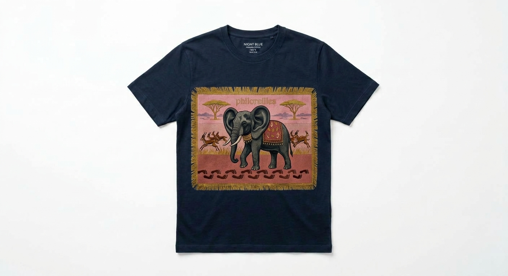

Sous-total 0,00 €
T-shirts officiels Philoreilles
La collection officielle de T-shirts Philoreilles
Afficher ses convictions jusqu’au bout des manches.

Le visuel de ce modèle est momentanément indisponible. Votre sélection reste valable.
Votre panier
Les convictions s’empilent, le sous-total aussi.
Votre panier est vide. Vos convictions, elles, n’attendent que d’être floquées : choisissez un modèle ci-dessus.
Votre navigateur bloque le stockage local : le panier sera perdu si vous quittez cette page.
Boutique de démonstration : aucun paiement n’est disponible, aucune commande n’est enregistrée et aucune livraison n’est prévue. Le panier reste uniquement dans votre navigateur.